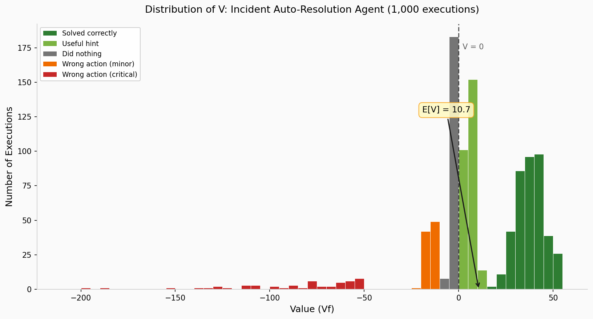

Part 2 of Optimizing in the Dark:
Organizational Blindness in AI Evaluations
← Part 1: A Structural Flaw in Judgment | Series Index
"Uncertainty is expensive. Ignoring uncertainty is negligent. Rewarding those who hide it is how organizations fail."
— again, just me
Let's frame our evaluation problem as follows: we have M AI systems to evaluate. Each could go to production — or not, based on what we decide given our eval results (Let's assume for now we are deploying internally or at one customer - so let's not worry about variabilities across customers). If deployed, each system can generate positive value — or it can harm (generate negative value).
For example, consider an Incident Auto-Resolution agent that attempts to fix IT tickets automatically. Each execution might solve the problem completely (high positive value), give useful hint or workaround (still some positive value), do nothing useful (or say "i don't know" and do nothing - probably value around zero or slightly negative), or take a wrong action that makes things worse (high negative value).
Or, consider an Incident Summarization agent — each summary might accelerate triage, add nothing, or mislead the analyst (high negative value). The value generated varies, execution by execution.
For now, assume we have a magic function Vf that captures the value that one execution of an AI system generates. In reality this metric is hard to define and hard to measure, but let's assume we have it.
If we pick a random execution and apply Vf to it, we get a number — the value of that execution. The number we get depends on which execution we picked. Different executions yield different values.
If we could observe many executions and record Vf for each, we'd see a distribution of values emerge. For example, consider the Incident Auto-Resolution agent: Imagine we deploy it and observe 1,000 executions. For each, we record Vf — the value generated. We might see:
Plot these 1,000 values as a histogram. That's the distribution of V for this agent.
We therefore conceptualize our understanding of value for this use case as a random variable V, described by a distribution of values, which in this case we obtain empirically. Each time the system runs, V takes a value — sometimes positive, sometimes negative, sometimes large, sometimes small. The Value random variable doesn't have one value. It has a shape — a distribution of outcomes, shaped by the mix of incidents it encounters, the actions it takes, and how those actions land in context.
If you take one thing from this series, let it be this: what you call "AI eval" in reality is "estimating the distribution of a random variable".
When we evaluate an agent to choose whether to deploy for us (or across the board for a set of customers), ideally we want to know the distribution of values we expect it to generate, or at least have a ballpark idea. Doing so means deciding on what distribution shapes are acceptable.
Both measuring / estimating the distribution and deciding on what distributions are acceptable are hard problems.
So let's make some simplifying assumptions and decisions. Consider the following possible decision rules (E[V] is the expected value of V, take it as what we think the average value of the agent will be):
| Decision Rule | Deploy if... | What it prioritizes |
|---|---|---|
| Positive expected value | E[V] > 0 | On average, the outcome is good |
| High success rate | P(V > 0) > 80% | The probability that a randomly chosen execution will have positive value is greater than 80% |
| Bounded downside | E[V] > 0 AND P(V < −L) < 5% | Executions on average generate value and the probability of very adverse outcomes are small |
| Median positive | median(V) > 0 | The majority of executions generate value (this is different than the expected value) |
If this sounds too complex for you and you are ignoring it, you should not be in the business of taking decisions on AI systems, not even as an executive. You are taking decisions by making choices and assumptions you don't know you are making.
Ideally you can run your agent at scale on the exact data it will see in production and get the distribution of V, which will in turn enable to you make informed decisions.
In practice, you have some measures obtained in some way by your team on some dataset. Based on this, you will form a belief about V. Or, more likely, you will form a belief about E[V], the expected value - or average value - of V, or, a belief about P(V > 0), the probability that V is positive, or whatever is your target metric. (Remember that figure with the metric of 89%? That implicitly states that the agent is expected to generate a positive value 89% of the time).
Your estimate can be wrong. Sometimes a little, sometimes a lot. The cost depends on how you are wrong and how wrong you are — not on why.
If your estimate is off, you either deploy a bad system (harm in production) or miss a good one (opportunity cost). The cost scales with how wrong you are.
Take our Incident Auto-Resolution agent. Suppose the true distribution has E[V] = −5 — on average, it hurts slightly more than it helps. But your evaluation estimates Ê[V] = +8.
You deploy. Over the next quarter, the system runs 10,000 times. The expected total harm: 10,000 × (−5) = −50,000 value points.
You were off by 13 points. That error, multiplied by production volume, became a quarter's worth of accumulated harm.
But how can our estimates be wrong if we experiment? and are they wrong "by chance", occasionally, or are they structurally wrong? and what can we do about it? We'll come to this in a second. But for now let's focus on the cost of hiding uncertainty.
Consider a presentation that tells you that an agent is 85% correct. Then consider another presentation where somebody tells you: "I am fairly sure that the agent will be correct between 60 and 90% of the time - and that's all I can say."
The second report is more informative and in many cases more honest than the first. It exposes our believed uncertainty, and invites questions about the basis of our belief.
You rarely hear that. It makes the team look unprepared and executives are likely to object and complain - which by itself simply results in this kind of reports being rare and in an increase of reports that give a false sense of confidence. As a decision maker - and as an engineer or scientist - once you hear that conclusion with indication of uncertainty you may decide that that's "good enough" or you may decide that we need some more investigations. Or, that we can move to prod, but cautioning the customer that our belief is as stated.
Every time as a manager or executive you do not ask and reward the indication of uncertainty (or worse, you "punish" it by making negative considerations on the team), you are setting up your org up for failure. The AI industry should learn from airline safety and similar industry where a lot of effort is spent on making sure that report of issues (eg, pilot tiredness, even pilot errors) are communicated and not "retaliated" against.
When someone reports a point estimate without uncertainty, you have exactly two options:
| What you hear | Threshold | Decision |
|---|---|---|
| "Accuracy is 85%" | 80% | Deploy |
| "Accuracy is 75%" | 80% | Don't deploy |
That's it. You act as if the estimate is the truth.
When someone communicates their belief with a range, you have more options:
| What you hear | Threshold | Options |
|---|---|---|
| "I believe accuracy is between 82% and 88%" | 80% | Deploy — entire range is above threshold |
| "I believe accuracy is between 70% and 95%" | 80% | Choice: deploy (accept risk that it could be 70%), don't deploy (accept that it could be 95%), or investigate further to narrow the range |
| "I believe accuracy is between 70% and 82%" | 80% | Borderline — might be worth more investigation before deciding |
| "I believe accuracy is between 55% and 95%" | 80% | Too uncertain — invest in better measurement before deciding |
The third option — investigate further before deciding — doesn't exist when you only hear a point estimate.
📐 Deep Dive: Computing the Value of Uncertainty Awareness
Optional. Skip to Part 2b →Setup: M agents, one customer
You have M agents to evaluate for your company. Your goal: deploy only where you're confident the agent will help more than harm. Ideally, you want most of the agent to be valuable. You know you can't be perfect, but you want, as a ballpark, around 90% of the agents to be valuable on average.
In enterprise AI, a bad deployment erodes customer trust, triggers escalations, and can lose the account. A delayed good deployment costs opportunity — but the customer doesn't know what they're missing.
Your teams report point estimates. You see:
| Agent | Reported E[V] | Your decision |
|---|---|---|
| A | +12 | Deploy |
| B | +3 | Deploy |
| C | +18 | Deploy |
| D | +6 | Deploy |
| E | −2 | Don't deploy |
| F | +9 | Deploy |
| G | +1 | Deploy |
| H | +15 | Deploy |
| I | −5 | Don't deploy |
| J | +7 | Deploy |
You deploy 8 agents. Seems reasonable — they all have positive expected value.
Same agents, same point estimates — but now you also see the uncertainty range:
| Agent | Reported E[V] | Uncertainty range | P(E[V] > 0) | Your decision |
|---|---|---|---|---|
| A | +12 | [+8, +16] | >99% | Deploy ✓ |
| B | +3 | [−8, +14] | ~65% | Hold |
| C | +18 | [+12, +24] | >99% | Deploy ✓ |
| D | +6 | [−15, +27] | ~70% | Hold |
| E | −2 | [−6, +2] | ~35% | Don't deploy |
| F | +9 | [+4, +14] | >95% | Deploy ✓ |
| G | +1 | [−12, +14] | ~55% | Hold |
| H | +15 | [+10, +20] | >99% | Deploy ✓ |
| I | −5 | [−10, 0] | ~5% | Don't deploy |
| J | +7 | [+2, +12] | >95% | Deploy ✓ |
Now you deploy only 5 agents (A, C, F, H, J) — the ones where you're confident.
You hold 3 agents (B, D, G) — not because they look bad, but because the uncertainty is too high. Their point estimates are positive, but the range includes significant negative territory. You're not 90% confident.
Suppose the true E[V] values are:
| Agent | Reported E[V] | True E[V] | Without awareness | With awareness |
|---|---|---|---|---|
| A | +12 | +10 | Deploy ✓ | Deploy ✓ |
| B | +3 | −4 | Deploy ✗ (harm) | Hold ✓ |
| C | +18 | +15 | Deploy ✓ | Deploy ✓ |
| D | +6 | +8 | Deploy ✓ | Hold (missed) |
| E | −2 | −3 | Don't deploy ✓ | Don't deploy ✓ |
| F | +9 | +7 | Deploy ✓ | Deploy ✓ |
| G | +1 | −6 | Deploy ✗ (harm) | Hold ✓ |
| H | +15 | +12 | Deploy ✓ | Deploy ✓ |
| I | −5 | −8 | Don't deploy ✓ | Don't deploy ✓ |
| J | +7 | +5 | Deploy ✓ | Deploy ✓ |
Without awareness: You deployed 8 agents. Two of them (B, G) had true E[V] < 0. You harmed the customer twice.
With awareness: You deployed 5 agents. All had true E[V] > 0. You missed one good agent (D) — but you harmed the customer zero times.
The tradeoff: you gave up one good deployment to avoid two harmful ones. Given our assumption that harm >> missed opportunity, this is a good trade.
Uncertainty awareness didn't change the agents. It didn't improve anything. It just made the uncertainty visible.
That visibility alone:
This is the epistemic value of uncertainty — the value of simply knowing what you don't know.
So far we've talked about uncertainty — your estimate has some range around it. If you report that range, at least you and your stakeholders know you're uncertain.
Bias is a different problem. Bias means your estimate is systematically off — not wobbling around the truth, but centered on the wrong number - and way more often than not, a massively optimistic number (we'll see why that is). Indeed, you can sometimes even have a narrow range centered on the wrong value.
| Your belief | Reality | Situation |
|---|---|---|
| Narrow range, centered on truth | Close to what you think | You can trust your estimate |
| Wide range, centered on truth | Somewhere in your range | Uncertain, but honest — your range contains the truth |
| Wide range, off-center | Not where you think | Uncertain and wrong — but the wide range might at least overlap with truth |
| Narrow range, off-center | Far from what you think | You're confident in a wrong number |
The last row is the problem: you feel confident, but you're wrong. And nothing in your run-to-run variance tells you so — because bias doesn't show up as variability.
These questions are rarely asked. Bias is invisible in run-to-run variance. Asking can feel like admitting weakness. And the organization's incentives often favor shipping over questioning.
We've seen the value of uncertainty awareness and the value of reducing uncertainty. But what happens when bias operates across your portfolio?
Suppose you've addressed the visibility problem — your teams report uncertainty ranges, and you make decisions accordingly. You've even invested in reducing uncertainty for borderline cases.
But your entire evaluation process is systematically optimistic by ~7 points. You don't know this. (actually, you do know this because you have seen you are always optimistic in your assessments)
Consider 10 agents. Your teams report beliefs, and you make decisions:
| Use case | What you believe | What's actually true | Your decision | Outcome |
|---|---|---|---|---|
| A | "78% to 92%" | 71% to 85% | Deploy | Might be below threshold |
| B | "70% to 86%" | 63% to 79% | Investigate | Actually below threshold |
| C | "88% to 94%" | 81% to 87% | Deploy | Still above — fine |
| D | "65% to 95%" | 58% to 88% | Investigate | Even more uncertain |
| E | "72% to 80%" | 65% to 73% | Don't deploy | Correct |
| F | "82% to 94%" | 75% to 87% | Deploy | Straddles threshold now |
| G | "75% to 83%" | 68% to 76% | Investigate | Actually below threshold |
| H | "80% to 88%" | 73% to 81% | Deploy | Barely above, risky |
| I | "68% to 78%" | 61% to 71% | Don't deploy | Correct |
| J | "79% to 93%" | 72% to 86% | Deploy | Straddles threshold |
With 7 points of bias:
And you don't know any of this. Your beliefs feel well-calibrated. Your ranges are honest about uncertainty. But they're all shifted.
Across a portfolio:
The cost isn't one wrong call. It's a portfolio of wrong calls, all tilted the same way.
Next: Part 2b: Uncertainty vs Variability — When you see a range, what does it mean?